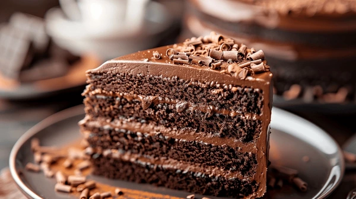

Bolo de Chocolate
Uma receita deliciosa e fácil de fazer!
Ingredientes
2 xícaras de farinha de trigo
1 xícara de açúcar
1 xícara de chocolate em pó
1/2 xícara de manteiga
1 xícara de leite
3 ovos
1 colher de sopa de fermento em pó
Uma pitada de sal
Modo de Preparo
Preaqueça o forno a 180°C.
Em uma tigela, bata a manteiga e o açúcar até formar um creme.
Adicione os ovos, um a um, e misture bem.
Acrescente o leite e misture.
Em outra tigela, misture a farinha, o chocolate, o fermento e o sal.
Adicione os ingredientes secos à mistura líquida, mexendo até ficar homogêneo.
Despeje a massa em uma forma untada e enfarinhada.
Asse por aproximadamente 30 minutos ou até que um palito saia limpo.
Deixe esfriar antes de desenformar.